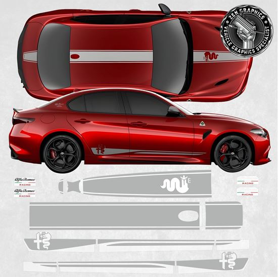

Specificații Tehnice
| Specificație | Valoare |
|---|
| Putere | 510 CP |
| Accelerație 0-100 km/h | 3.9 secunde |
| Viteză maximă | 307 km/h |
Termeni cheie
- CP
- Cai Putere
- Bi-Turbo
- Sistem cu două turbine pentru presiune crescută
Canvas
Sunet motor
Video YouTube
Web Storage
Design cu dungi laterale

Înapoi la pagina principală